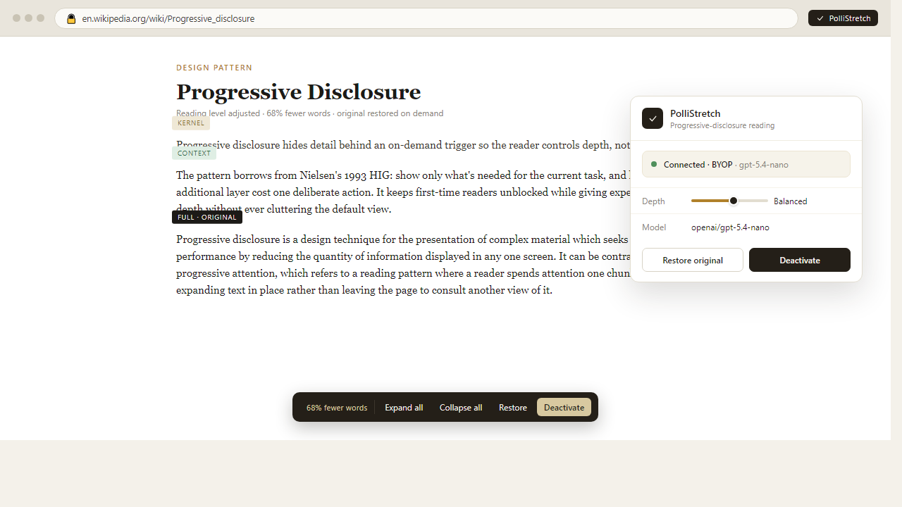

PolliStretch
Read less. Understand more. Explore anything.
Progressive-disclosure reading for any webpage — powered by your own Pollen.
Install (Load Unpacked)
-
1
npm run build).-
2
-
3
chrome://extensions (or brave://extensions, edge://extensions) and enable Developer mode (top right).-
4
dist/ folder inside the extracted release.How it works
One AI call returns a condensed kernel and context layer; the full original text is always restored from a local DOM snapshot (zero hallucination).
Pollinations device authorization stores your token only in chrome.storage.session. No developer-funded fallback, no backend.
Original paragraph subtrees cloned before mutation; restore replaces by reference, preserving node identity for external references.
Inline chevrons, floating toolbar (Expand All / Collapse All / Restore / Deactivate), React popup with depth slider, themes, model picker.
Keyed by chunk hash + model; identical re-activation costs zero Pollen. 7-day TTL, manual clear.
Alt+Shift+P activates on the current page; Ctrl+Shift+P opens the popup.
Preview

Built for Pollinations Quest #17998
This extension was built for Pollinations Quest #17998. It uses the Pollinations text generation API with the reader's own Pollen balance via the official device authorization flow.